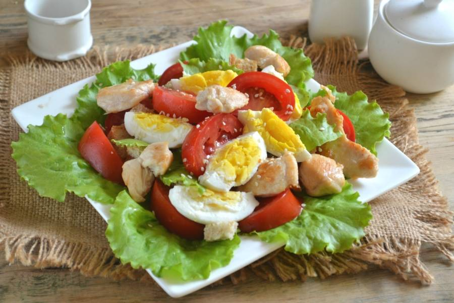
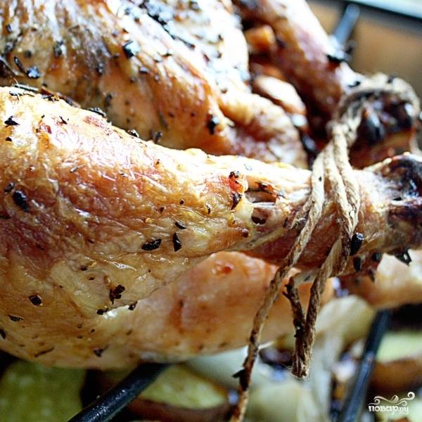
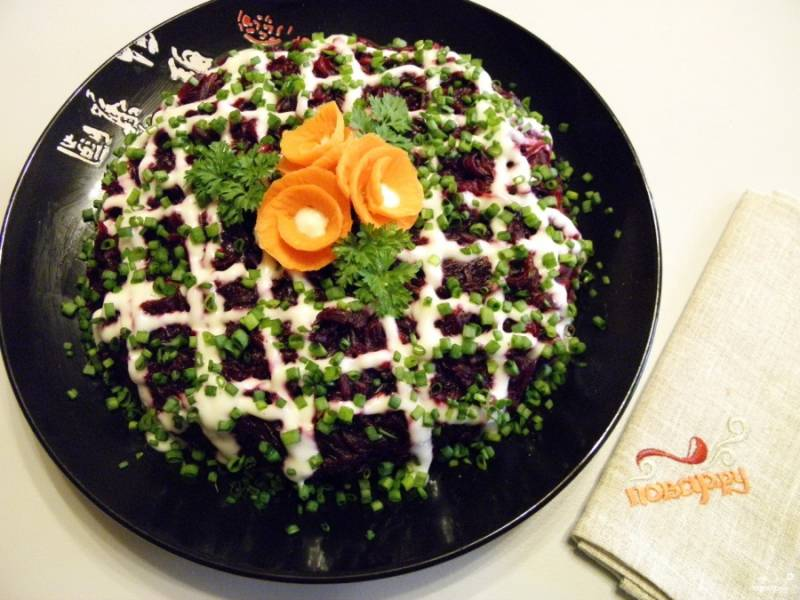
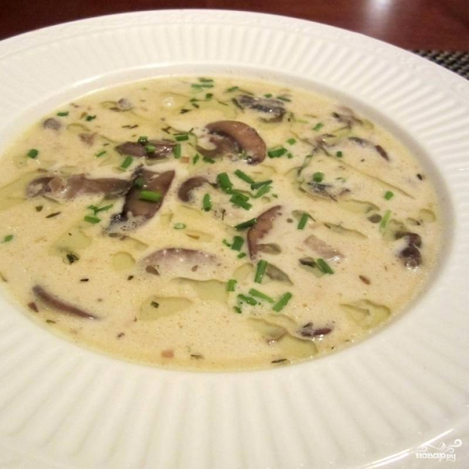
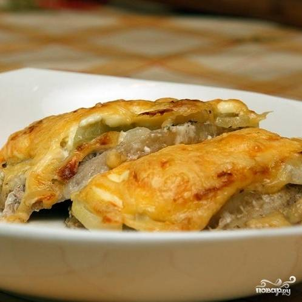
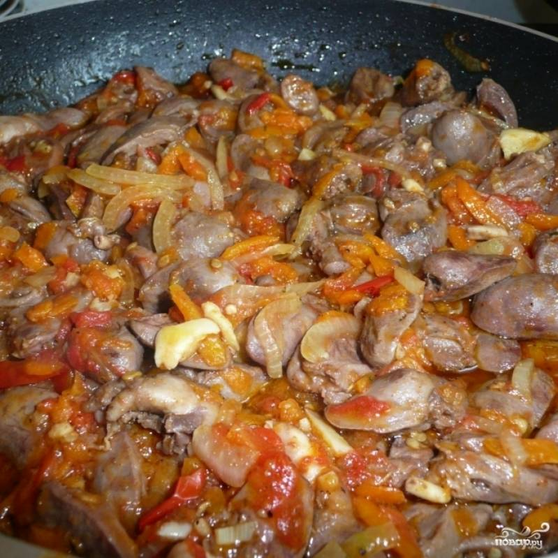
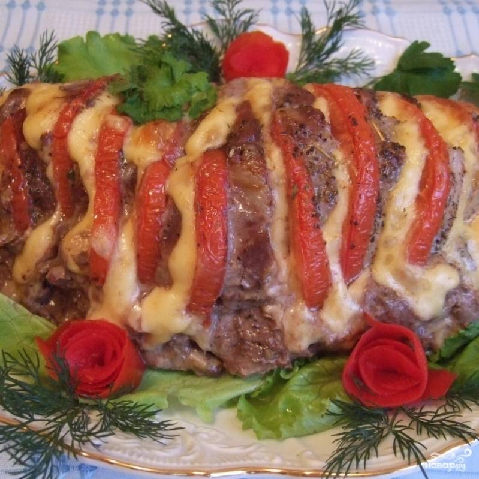

| НАИМЕНОВАНИЕ БЛЮДА | РЕЙТИНГ БЛЮДА | СЫЛКА НА РЕЦЕПТ | ФОТО БЛЮДА |
|---|---|---|---|
| САЛАТ ЦЕЗАРЬ | 9/10 | ссылка на рецепт блюда |  |
| ЖАРЕНЫЙ ЦЫПЛЕНОК С ЧЕСНОКОМ |
9/10 | ссылка на рецепт блюда |  |
| СЕЛЬДЬ ПОД ШУБОЙ | 7/10 | ссылка на рецепт блюда |  |
| СЛИВОЧНЫЙ ГРИБНОЙ СУП | 8/10 | ссылка на рецепт блюда |  |
| МЯСО ПО-ФРАНЦУЗСКИ С КАРТОФЕЛЕМ |
7/10 | ссылка на рецепт блюда |  |
| КУРИНЫЕ СЕРДЕЧКИ | 9/10 | ссылка на рецепт блюда |  |
| СВИНИНА В ДУХОВКЕ | 8/10 | ссылка на рецепт блюда |  |